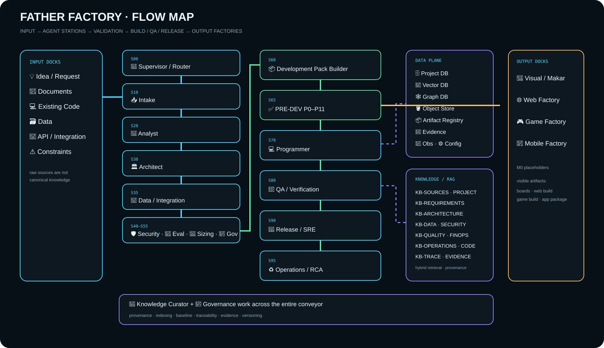

Step 2 · information flow skeleton
Кто что получает, читает, пишет и кому передаёт
Сначала фиксируем нотацию и статическую инженерную схему. Ниже — интерактивный слой: выбери станцию и увидишь её входы, БД, базы знаний/RAG, выходы и следующего получателя.
← Вернуться в FactoryNotation
Нотация фабрики
▣ Станция = агент/роль
🗄 DB = operational state
🧠 KB/RAG = знания и retrieval
✅ Gate = блокирующая проверка
🎨🌐🎮📱 Output Dock = конечный продуктовый цех

Interactive trace